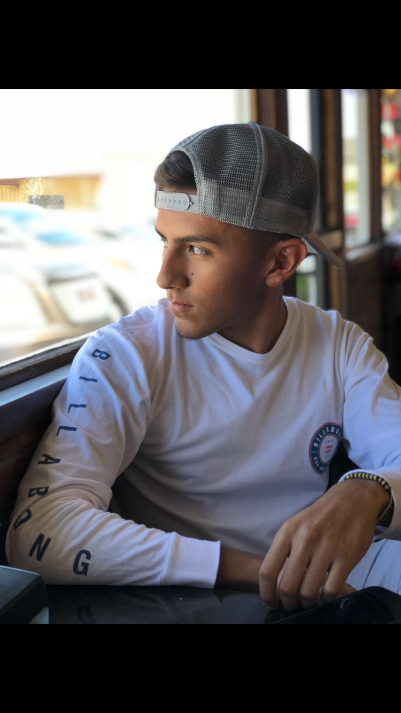

My Life

Running at Mt. Sac
Cross Country is one of the few sports that I do. My Senior year will be the only year that I do this sport.
One of my Hobbies

Ronaldo's overhead goal vs Juventus
Soccer is a main hobby that I do. I started playing at the age of 10 when I joined my first soccer team. Ever since then I've been playing and watching the sport which I've enjoyed doing.
About Me
I'm Elian Rodriguez and I am Senior that goes to Shafter High School. Currently, I'm 17 years of age and will turn 18 on January 18th. I mostly watch soccer and combat sports such as the UFC and Boxing.